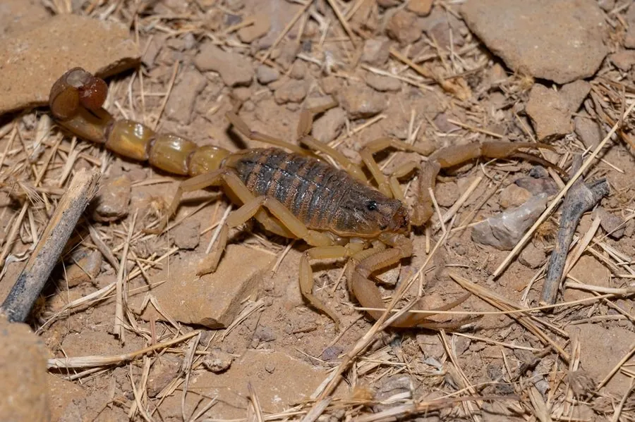

蛛形动物 · 动物界
非洲蝎 Hottentotta hottentotta

体色黑褐、尾节粗壮的中型蝎，原产西非与中非，毒性较强，因宠物贸易被带入多地饲养。
- 分类
- 门节肢动物门纲蛛形纲目蝎目科钳蝎科属霍氏蝎属
- 栖息环境
- 稀树草原、灌丛、柴堆、土墙缝隙与村落周边
- 地理分布
- 西非至中非的稀树草原地区
- 保护级别
- 常见种，无保护级别；宠物贸易中流通较广
物种志
非洲蝎的体长约六至八厘米，体色黑褐至深褐，体表颗粒粗糙，尾部粗壮而各节带脊，双螯细长。它属于钳蝎科，尾针毒液的毒性较强。与许多沙漠蝎不同，它对湿度有一定耐受，常出现在较湿润的稀树草原和人类居所附近，翻动柴堆和砖块时容易遇到。
它分布于西非至中非的稀树草原、灌丛和村落周边，白天躲在石块、倒木和土墙缝隙里，夜间捕食昆虫与小型无脊椎动物。雌蝎产下幼蝎后背负数周才让它们离开。它的毒液含神经毒素，叮刺会引起剧烈疼痛和局部肿胀，也可能出现心悸、出汗等全身症状。由于外形醒目，它在国际宠物贸易中流通较广，饲养者必须使用长镊子操作，不应徒手接触，也不应随意放生到非原生地区。
形态与习性
- 体长约六至八厘米，黑褐至深褐
- 尾节粗壮，各节带明显脊线
- 栖息稀树草原、柴堆与土墙缝隙
- 活动夜行，白天藏于石块倒木下
- 毒性神经毒素，可致剧痛与心悸出汗
- 饲养风险须用长镊子，禁止徒手接触
趣味知识
- 它比沙漠里的蝎子更能忍湿，常出现在村庄的柴堆和墙缝里。
- 被它叮到不只是疼，还可能心慌出汗，属于需要就医的叮刺。
- 宠物市场上它很常见，但操作时必须用长镊子，徒手极其危险。